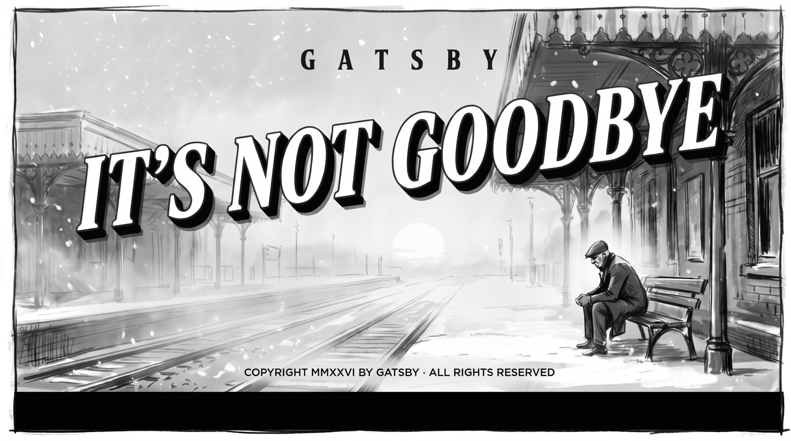
Intro
Film noir title card: black and white, letterboxed, grainy. Retro 3D lettering over the foggy platform at dawn. The old man is already on the bench.
DISSOLVEThis music video concept is based on the premise that "It's not goodbye" = Hello.
The intention is that scenes would be photo-realistic, hi-fidelity video (not illustrations). These sketches are just to convey a short story idea.
Concept:
The band play as buskers in an old-style train station at winter time where they observe multiple types of goodbyes based loosely on what's happening in the song lyrics.
Most scenes can be generated using AI; but the band scenes can be real - shot at Malahide Train Station.
The linear story is the band playing and observing goodbyes. The subplot is the story of the old man.

Intro
Film noir title card: black and white, letterboxed, grainy. Retro 3D lettering over the foggy platform at dawn. The old man is already on the bench.
DISSOLVE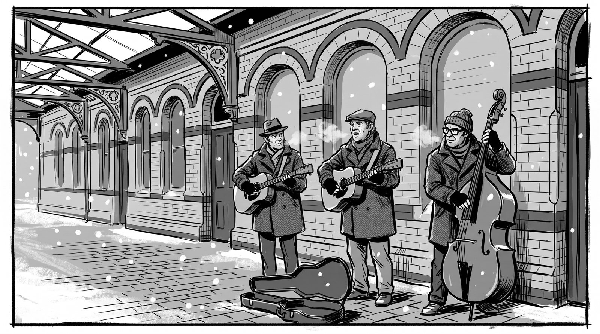
Intro
GATSBY busk against the arched station wall: two acoustic guitars and a double bass. Heavy overcoats, hats and fingerless gloves, their breath visible in the cold air.
CUT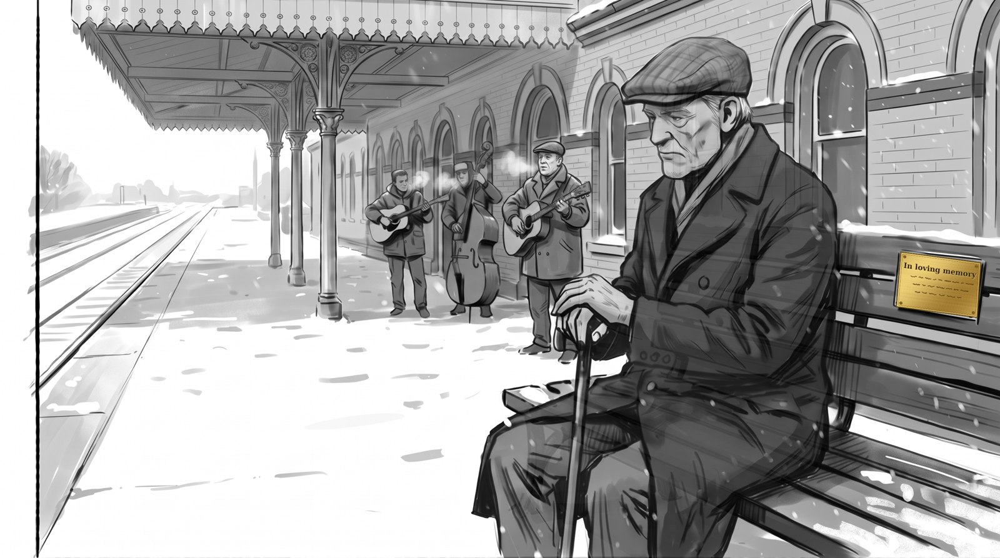
Intro
Snow falls around and through the old man but not on him. GATSBY play as buskers in the background and their breath is very visible in the cold air. The old man's breath is not visible.
CUT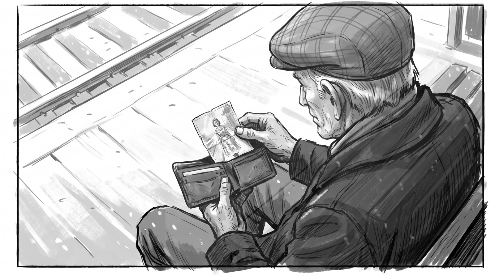
Verse 1 - "many years ago"
From above and behind: he takes a small, creased photo from his wallet showing an image of a younger woman (his wife).
CUT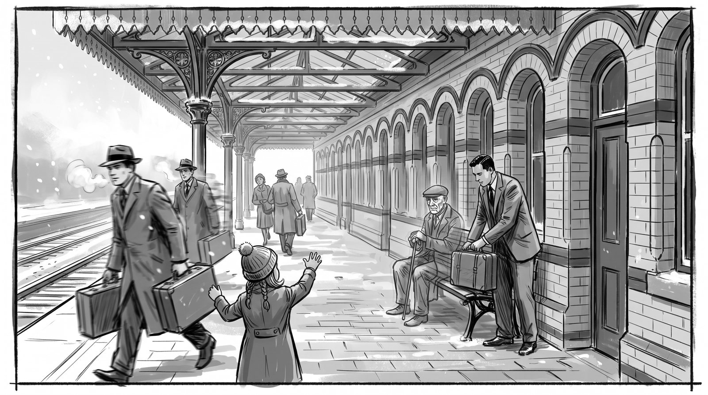
Chorus 1
Commuters rush past in double speed as the old man remains motionless on the platform bench. A passing child waves at the old man.
CUT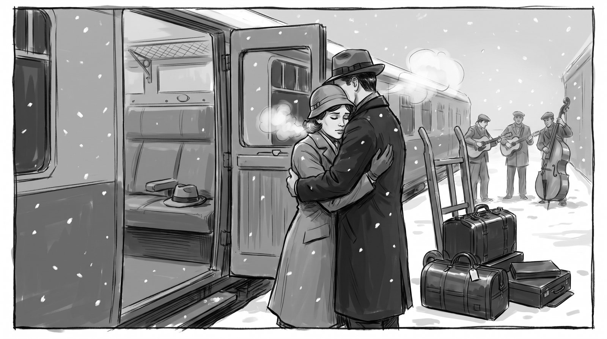
Verse 1
Goodbye 1 - A loving couple hug goodbye at the carriage door before he boards, his old leather luggage beside them. Camera refocuses to the band playing behind them.
CUT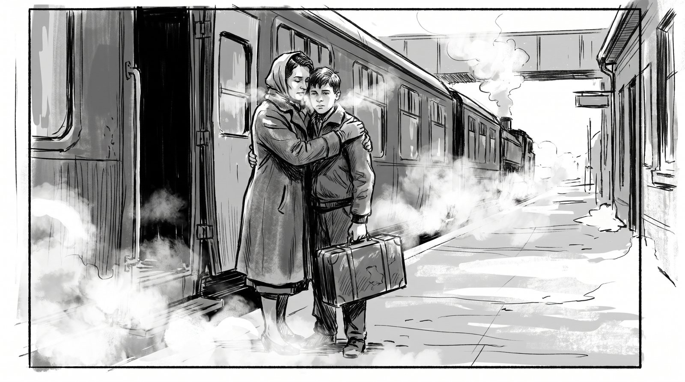
Verse 2
Goodbye 2 - 'Time to take your path'. A proud mother hugs her son at the carriage door before he boards the train. Steam rolls from under the train as the conductor's whistle blows.
CUT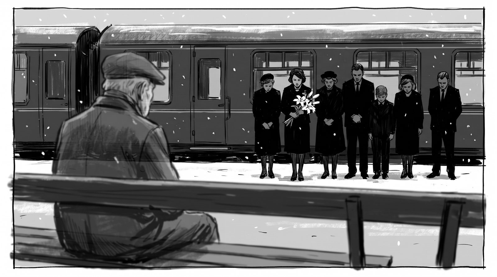
"Don't say sorry"
The old man observes a sombre family travelling to a funeral.
CUT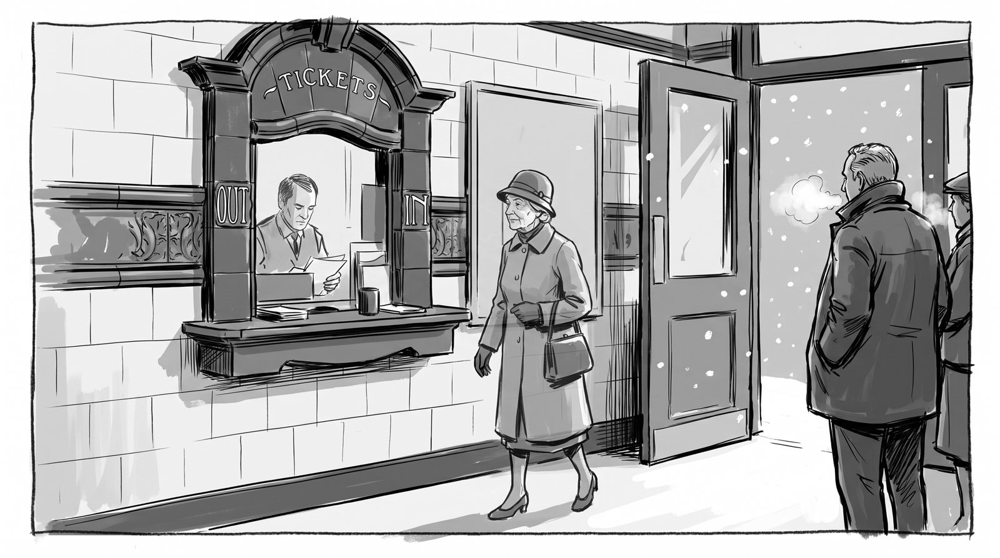
Into the final chorus
The old woman walks past the ticket office window without stopping. The clerk doesn't look up. Her breath is not visible in the cold air.
CUT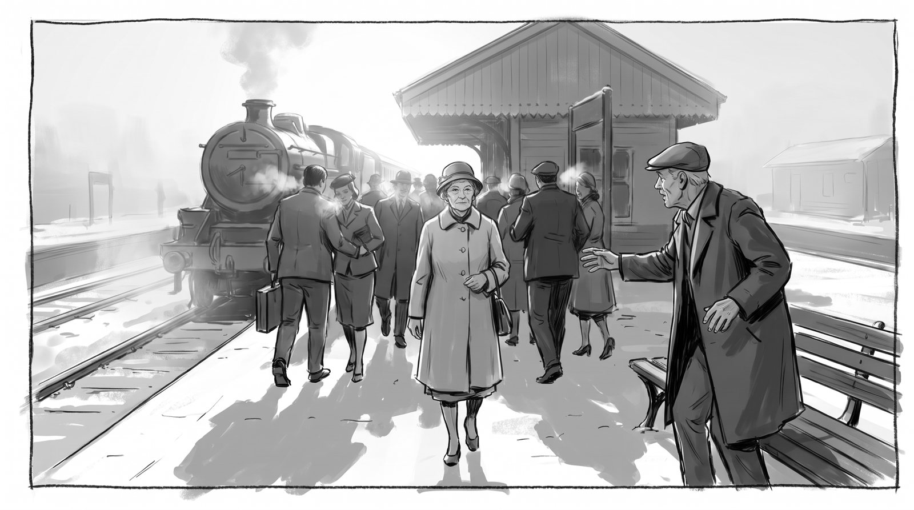
Final chorus
An old woman slowly moves through the crowd towards the camera. People part without seeing her. No breath. The old man sees her and rises from the bench in shock.
CUT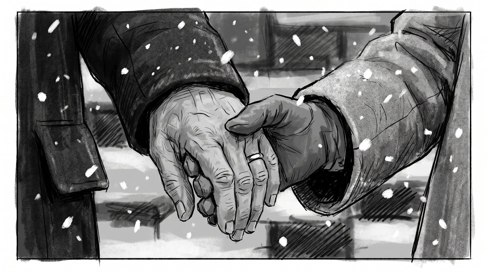
"Winter takes you by the hand"
The elderly couple hug in relief. She takes his hand on the lyric. His bare hand, her gloved one, a wedding ring.
CUT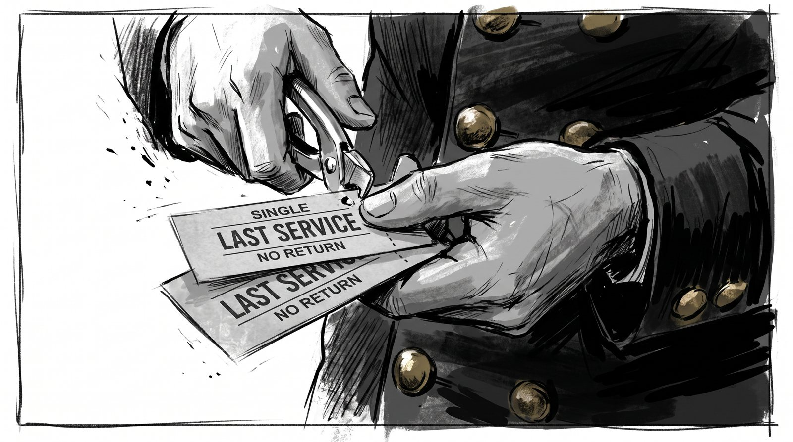
Final chorus
The conductor punches two tickets. The tickets clearly read SINGLE, LAST SERVICE, NO RETURN. And hands them to the couple.
CUT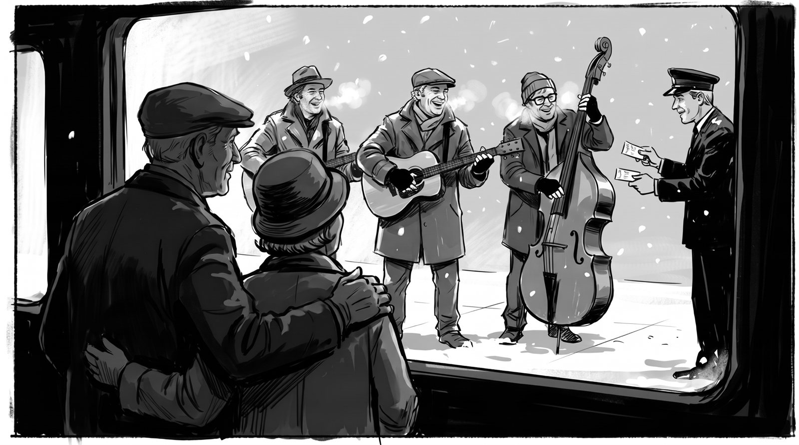
"It's not goodbye love"
At the carriage door, the old man pauses and turns to the band. They smile and nod their goodbyes (meaning they can see him). The conductor jokingly offers the band 3 tickets; they chuckle and shake their heads.
CUT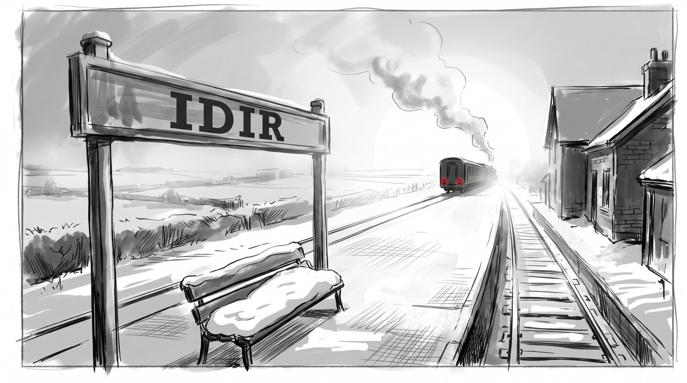
Fade-out
As the train slowly pulls away from the platform, the camera moves back to reveal the station name, IDIR (Irish for "between"). The train chugs into the low sun.
(Station name is TBC - just a placeholder for now).
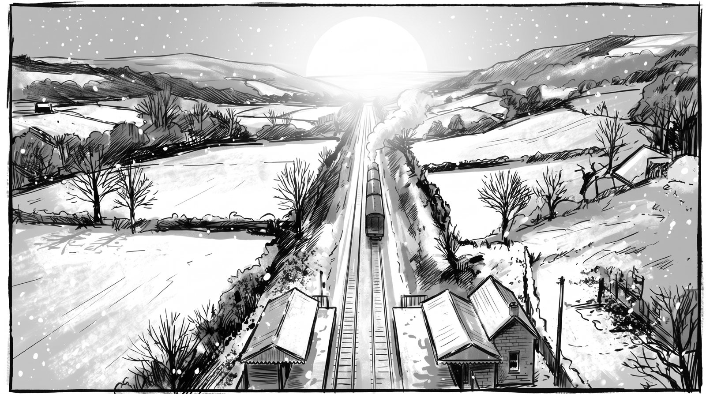
Fade-out
As the song fades out, camera angle slowly pulls up and away to show an aerial view of the train as it heads down the snowy valley "into the sunlight".
DISSOLVE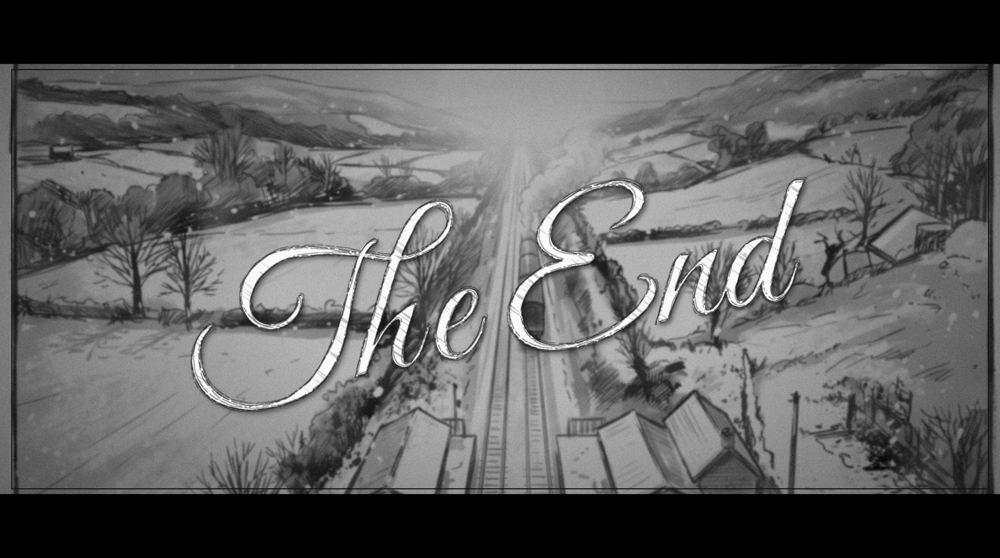
Final note
Closing caption 'The End', over the misty valley.
FADE OUT